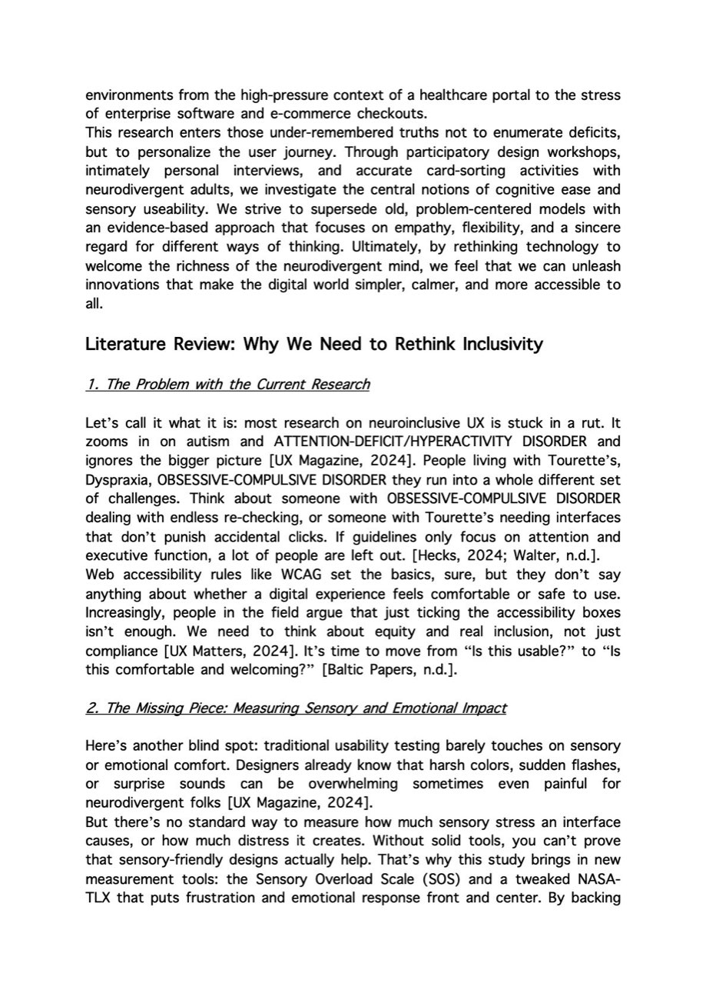
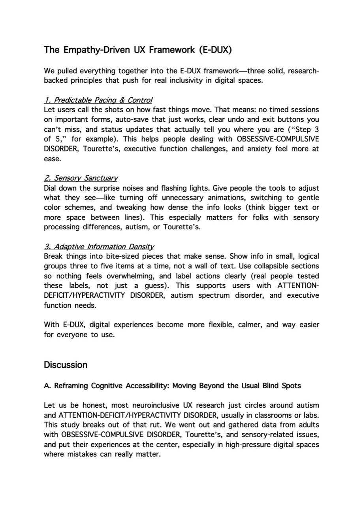
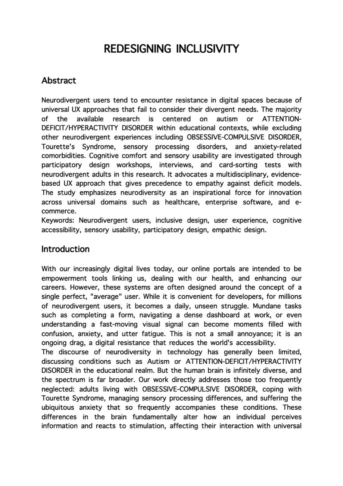
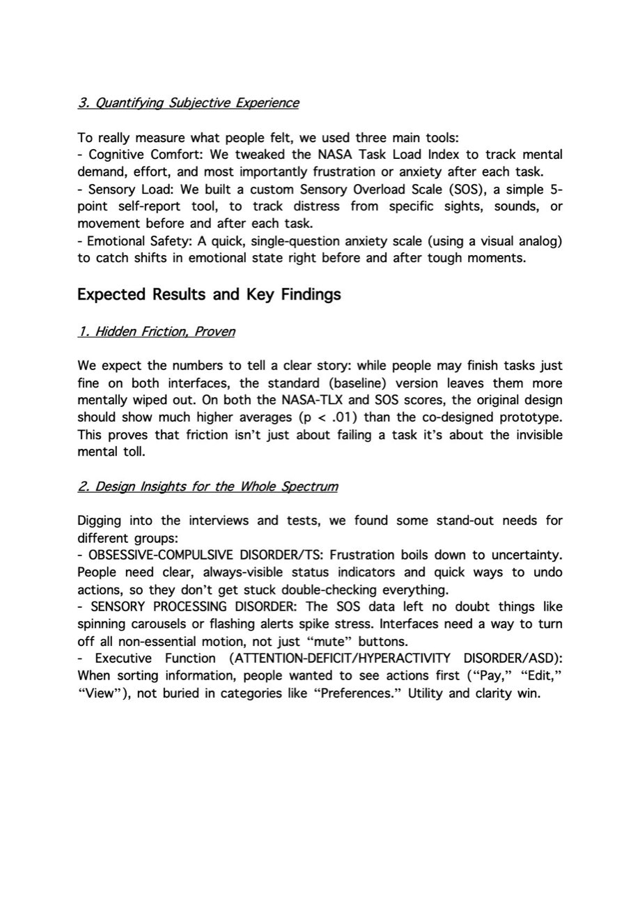
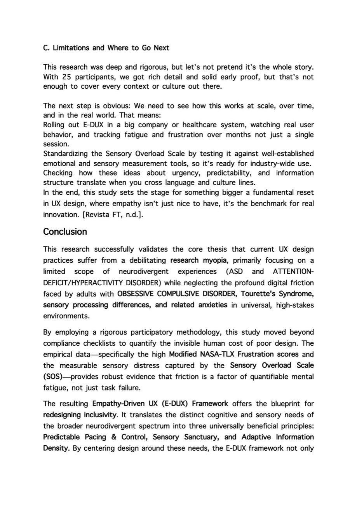

Adults, 18 and over
Neurodivergent participants as co-designers, not test subjects.
Research paper · Neuroinclusive UX · 2026
How adults with OCD, Tourette’s, sensory processing differences and anxiety experience digital products, and a framework for designing calmer ones.



Application form
Step 3 of 5
Saved automatically, just now
Most neuroinclusive UX research centres on autism and ADHD in education, leaving out adults with OCD, Tourette’s, sensory processing differences and anxiety in the places that matter most.
This paper looks at the adults neuroinclusive research tends to leave out, and at the everyday, high-stakes places they meet friction: healthcare portals, work software and online checkouts.
It argues for an evidence-based approach led by empathy rather than a deficit model, and treats neurodiversity as a source of better design for everyone.
Where most research looksWho this paper centres
Guidelines built around attention and executive function miss needs like endless re-checking with OCD, or interfaces that punish accidental clicks with Tourette’s.
WCAG sets the baseline, but says nothing about whether an experience feels safe and calm. The question has to move from “is this usable?” to “is this comfortable and welcoming?”
Usability testing barely touches sensory or emotional comfort, so there’s no standard way to show that sensory-friendly design helps.
The problem sits in the design, not the person.
From the discussion
Neurodivergent participants as co-designers, not test subjects.
Autism, ADHD, OCD, Tourette’s and sensory processing disorder.
From listening, to sorting, to designing and testing together.
Ethics & safetyBefore anything
In-depth interviewsPhase 1
Card sortingPhase 2
Co-design workshopsPhase 3
Testing against the originalPhase 3
A mixed-methods study with formal IRB approval and emotional safety built in: decompression breaks were always there, and anyone could pause or leave an activity at any time, to avoid cognitive or sensory overload.
Cognitive comfort
Modified NASA-TLX
Mental demand, effort and, above all, frustration and anxiety after each task
Sensory load
Sensory Overload Scale
CalmOverwhelmed
A five-point self-report of distress from sights, sounds or movement, before and after each task
Emotional safety
How do you feel right now?
At easeAnxious
One quick visual question, right before and after difficult moments
The three measures, drawn as the questions people answer
The paper expects people to complete their tasks on both versions of the form, but the original to leave them far more drained, with markedly higher NASA-TLX and Sensory Overload scores than the co-designed prototype (p < .01). The friction is real even when nothing visibly fails: it’s an invisible mental toll.
Uncertainty is the frustration: clear, always-visible status and quick ways to undo.
Motion spikes stress: a way to turn off all non-essential motion, not just a mute button.
Actions first: Pay, Edit, View, rather than digging through categories like “Preferences”.
Designing for the edges improves the middle, for people under stress and on mobile too.
Everything the study heard comes together in three principles for calmer, more flexible digital products.
People set the pace: no timed sessions on important forms, auto-save that just works, undo and exit buttons you can’t miss, and status that says where you are, like “Step 3 of 5”.
For OCD, Tourette’s, executive function and anxiety
No surprise sounds or flashing lights. Let people turn off unnecessary animation, switch to gentle colours and adjust density, like bigger text or more space between lines.
For sensory processing, autism and Tourette’s
Information in small, logical groups of three to five, collapsible sections so nothing overwhelms, and action labels tested with real people rather than guessed.
For ADHD, autism and executive function
Application form
Step 3 of 5: Your details
Saved automatically, just now
01 Predictable pacing: where you are, that it’s saved, a way out
Comfort settings
Reduce motionTurns off all non-essential animation
Gentle coloursSofter contrast, no flashing alerts
Text size
AA+A++Line spacing
NormalMore02 Sensory sanctuary: motion, colour and density under the person’s control
Your account
Bills 3
Messages 2
Documents 4
03 Small groups, collapsed until needed
03 Actions first, in words people chose
01 Every action can be taken back
Illustrations of the three principles, not the study’s own prototype
These aren’t special add-ons. Turning off parallax and flashing alerts lowers sensory load for everyone, including people with vestibular issues, anyone working under stress, and people on mobile. Chunking information to what working memory can hold, about four items at a time, makes a dashboard easier for anyone to skim in a hurry. What starts as a neurodivergent need becomes a new standard for clarity.
Twenty-five participants give rich detail and early proof, not the whole picture. Next is E-DUX in a large company or healthcare system, tracking fatigue and frustration over months rather than one session.
Validating the Sensory Overload Scale against established emotional and sensory tools, so it’s ready for industry-wide use.
Testing how ideas about urgency, predictability and information structure translate across languages and cultures.
Everyday tasks, a form, a dense dashboard, a fast-moving signal, can fill up with confusion, anxiety and fatigue. Not a small annoyance, but an ongoing drag.
Research stuck on autism and ADHD, accessibility that ticks boxes but not comfort, and no standard way to measure sensory and emotional impact.
Ethics and safety first, then three phases: in-depth interviews, card sorting with real interface pieces, and co-designing a better application form.

A modified NASA-TLX, a Sensory Overload Scale and a one-question anxiety scale, and the friction they expect to reveal even when tasks get done.
Predictable pacing and control, a sensory sanctuary, and adaptive information density.

Scale and time, a standard measure, and testing across cultures, then the conclusion: the benchmark for real innovation.
Eight pages: the abstract and introduction, the literature review, the method, the measures and expected findings, the E-DUX framework, the discussion, limitations and next steps, and the references.
Open the PDF ↗